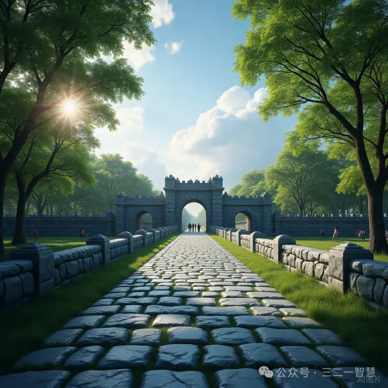
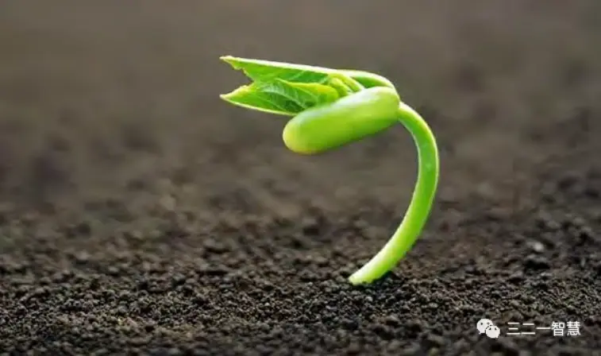

——从ΔSIO到结构张力的生成路径
摘要
创造力通常被定义为个体所具有的一种能力、一种心理倾向，或者一种天赋表现。在现代教育、组织管理和认知心理学的框架中，创造力被普遍归类为可以测量、激发、培养和比较的“个人特质”或“认知资源”。然而，这种对创造力的主观化、实体化理解，在深层哲学上隐藏了一个根本性的问题：它将创造力误认为是一种“属于主体”的、静态的资源，而忽视了创造力作为一个“结构性动态现象”的生成本质。
本文主张应当从“发生学”（genesis theory）的视角重新理解创造力的本体位置与发生机制。所谓“发生学”，是一种生成性哲学立场，它不将世界、存在或知识视为“已然存在的东西”，而是将其视为在张力、互动、差异与路径展开中持续生成的结构过程。在这个意义上，创造力不是“被拥有”的，而是“在发生”的。
为此，本文引入“主客互动本体论”（SIO Ontology）作为基础分析框架。SIO是由主体（Subject）、互动（Interaction）与客体（Object）三者构成的不可分割的存在单元。与传统哲学中将主–客关系看作两个独立实体之间的联系不同，SIO本体论强调三者本质上是共生共构的生成结构，是动态展开的张力系统。在这个结构中，创造力不是属于主体（S）的“能力”，也不来自客体（O）的“刺激”，更不只是互动（I）中的“技巧”，而是整个SIO系统在一定张力场中处于生成态时，所自然涌现的一种结构性节奏现象。
进一步地，本文将“ΔSIO”（差异化的SIO事件）概念引入创造力研究中。ΔSIO是指每一个可被主体感知的结构张力差异事件，例如：一个公式突然失效，一段旋律产生不适，一个实验参数跳动不可解释等。这些差异事件是现实层面可被直接感知的“创造力微粒”，是创造性思维的发生入口。人类无法直接感知SIO整体，但可以感知这些ΔSIO的连续出现与变化，进而在认知系统中将其组织、归类与结构化，由此生成新的理念SIO。这意味着：创造力的真正“素材”并不是思想或灵感，而是现实结构中连续出现的可识别张力事件（ΔSIO）序列。
本文进一步提出“创造力呼吸模型”：将创造力理解为一个结构性节奏过程，包括“吸气”——ΔSIO输入、张力激活，“扩张”——结构探索与路径展开，“呼气”——张力释放与成果表达，以及“闭合”——结构固化与路径终止。通过这一模型，创造力不再被看作一次性爆发，而是一种在张力结构中不断循环的呼吸节奏。
理论建构之外，本文通过三个领域的详细案例来验证“创造力发生学”的分析力与适用性。在科学领域，我们分析牛顿与爱因斯坦如何在ΔSIO张力下生成新的理论结构；在技术领域，探讨乔布斯与比尔·盖茨如何在复杂SIO张力网络中推动技术重组；在艺术领域，剖析毕加索与村上春树如何通过风格演化处理结构差异与表达路径，体现出艺术创造力的张力节奏。
最终，本文指出：创造力不是一种资源，而是一种结构的张力呼吸，是生成中的节奏，是差异的能量化，是路径的生成与意义的释放。创造力的“发生”，不是发生在“人”的内部，而是发生在“主–客–互”三维结构之间的交互网络中。当我们真正从结构张力的角度理解创造力时，它不再是神秘灵光一现，而是存在之流中的自然呼吸，是生成宇宙中每一个开放结构的节奏性必然。

引言：为什么要从“发生”来理解创造力？
“创造力”（creativity）是什么？这看似简单的问题，在哲学、科学、教育与管理等多个领域已被反复讨论了数千年。
在古代希腊传统中，柏拉图认为创造力来源于“灵感”（inspiration），是来自神域或理念世界的“降临”——诗人、艺术家、哲人之所以创造，不是因为他们“能做”，而是因为他们“被赋予”了创作之神（muse）的恩典。这是一种“他者性”本体论，把创造力理解为外部神力在主体中“激活”的力量。
到了启蒙时代，康德则将创造力重新纳入主体性。他在《判断力批判》中提出“天才”的概念，认为天才是“自然赋予艺术的规则者”，其创造的作品包含了“他自己都不能完全解释”的力量。这种观点依然认为创造力是神秘的，但它将神性“内化”为个体独特的认知结构与感性能力，是“先天秩序在个体中的呈现”。康德把创造力从“神之呼吸”转化为“人的天赋”，标志着主观性在创造力理论中的首次中心化。
20世纪以来，随着心理学的发展，创造力开始被系统研究，转化为可定义、可测量的认知能力。吉尔福特（J. P. Guilford）、托兰斯（E. Paul Torrance）等心理学家开发出一系列“创造力测验”，将发散思维、灵活性、独特性等因素量化，试图将“创造力”转变为标准化认知指标。这种方式受到教育界与企业界的欢迎，创造力开始变成“可以激发”“可以培养”“可以量表评分”的资源。
进入21世纪，“创造力”已成为全球性战略关键词：国家追求“创新驱动型经济”；企业强调“颠覆式创新”；学校培养“21世纪关键能力”；个人追求“个人品牌+创造性表达”。创造力成了一种“可流通的资本”，是知识经济时代的“黄金”。
然而，在这种热潮之下，我们是否认真问过：
❓“创造力究竟在哪里发生？”
❓“为什么同一个人，在不同情境中，创造力表现会完全不同？”
❓“为什么团队、组织、甚至机器，也可以被描述为‘具有创造力’？”
这些问题提示我们：创造力从来不是单一主体的封闭能力，而是结构性的、系统性的、多因素张力结构所生成的现象。当我们用“能力”“天赋”“人格特质”等词来描述创造力时，我们其实是在遮蔽它的结构发生机制。创造力不是一种“状态”，而是一种“过程”；不是一种“拥有”，而是一种“发生”。
这就迫使我们，必须将对创造力的理解从“实体论”（ontology of possession）转向“发生学”（genesis-based understanding）。发生学是一种哲学立场，它认为一切存在都是在互动、张力、差异与节奏中生成的——世界不是由“已经存在的事物”构成的，而是由“正在发生的结构过程”构成的。
✅ 创造力，不是“主观性表现”，而是“结构张力在生成中的一次呼吸”。
从这个角度看，创造力不再是某个“人”的特性，而是某个结构处于张力激活状态时，所自然出现的“现象”。创造力不属于“个体”，而属于“结构中”。当主–客–互动之间张力剧烈时、路径开放、意义未定时，创造力就“呼吸了出来”。
为了更具体地阐述这个观点，我们引入主客互动本体论（SIO Ontology）作为基础分析框架。SIO代表Subject（主体）、Interaction（互动）与Object（客体）的统一结构。传统哲学往往将这三者分离，研究“主体如何感知客体”，或“互动如何连接两者”。而SIO本体论认为：这三者不可分割，一个SIO就是一个“正在生成中的存在单元”，每一个认知活动、每一次创造行为、每一种意义经验，都是一个SIO在结构中展开的结果。
接着我们引入“ΔSIO（差异性主客互动事件）”的概念。这是我们对现实中可感知、可组织、可整合的张力单位的命名。换句话说，我们不能直接经验SIO，但我们可以直接经验ΔSIO：那些不适、不顺、不通、失败、意外、冲突、惊讶、破裂……这些“结构张力的冒头”，就是创造力的真正入口。ΔSIO是“创造力的原子”。
人类的创造活动，从科学发现到艺术发明，从技术突破到教育创新，其实都建立在对ΔSIO的感知、处理、组织与升华之上。当ΔSIO在认知系统中聚集到一定程度，在三律系统（特征律、自由律、幸福律）的作用下，被有效整合、路径展开、张力释放，那么一个新的SIO结构便被生成，这就是我们看到的“创新成果”“艺术作品”或“技术发明”。
为了描述这一生成过程，本文提出了“创造力呼吸模型”：将创造力视为一种节奏性的发生行为，而非瞬间爆发或线性发展。创造力不是“发生一次”，而是“持续张力–释放–再张力”的节奏循环：吸气→扩张→呼气→闭合→再吸气。每一次伟大的创造，都是一次结构性深呼吸。
本文的中心结构如下：
第一部分：提出“创造力属于SIO结构”的哲学主张，重构创造力的归属；
第二部分：定义ΔSIO作为现实经验的认知原子，说明我们感知的是差异，不是整体；
第三部分：三律系统作为张力调节机制，控制创造力的生成能否实现；
第四部分：建立“创造呼吸模型”，描绘创造力的生命周期；
第五部分：以科学、技术、艺术三大领域为例，展开创造力发生的具体结构机制；
第六部分：探讨创造力的枯竭与再生机制，说明创造不是线性可控，而是结构性可再生成。
通过以上分析，本文最终主张：
创造力不是人的属性，而是存在的节奏。不是大脑的闪光，而是结构的呼吸。不是个体的奇迹，而是张力中必然的发生。
这也意味着：每个人都可能创造，每个组织都可能再生，每个文明都可能涌现，只要它仍处于张力场中，仍能让ΔSIO被组织，并运行在三律的结构之上。
创造力，不是终点，而是“正在成为”的过程。
而我们每一个人，不是“天才”，而是一个个参与SIO结构呼吸的人。
第一章：创造力属于SIO结构，而不是属于“我”
1.1 重新定位“创造力”的归属
“你很有创造力”——这句话在人类社会被广泛使用。我们赞美一个科学家、一个作家、一个发明家、一个孩子，都会用这个标签。他们的“创造力”看似是一种内在天赋、心理能力、个性特征，甚至是灵感的流动。人类长期以来对创造力的理解几乎都围绕着一个核心前提：创造力属于主体，属于“我”。
1.1.1 三个经典误解
举三个被反复传播的例子：
牛顿有创造力，因为他“聪明”“逻辑能力强”“喜欢独自思考”；
乔布斯有创造力，因为他“有远见”“审美敏锐”“直觉精准”；
毕加索有创造力，因为他“叛逆”“不走寻常路”“思维极端自由”。
但这些认知建立在一个个人中心主义的创造力神话之上，它们忽略了一个更深刻的事实：
✅ 这些创造力，并不是始终存在于他们身上，而是“某些时期、某些情境、某些结构状态”下的产物。
1.1.2 牛顿不是永远有创造力
牛顿因发现万有引力、发明微积分、建立光学模型而被奉为“科学革命的化身”。但在他晚年，牛顿将大部分精力投入炼金术与宗教文本研究，并没有再产生新的科学模型。换句话说，“那个有创造力的牛顿”只存在于一个特定历史时段，并非一个可以随时调用的“能力块”。
这说明：牛顿的创造力不是他随时拥有的，而是当时SIO结构高度激活的结果。
1.1.3 乔布斯的创造力来自系统
乔布斯之所以引爆个人消费科技革命，并不是因为他个人有超能力，而是因为他正处在一个非常独特的主–客–互结构中：
S（乔布斯）：具有整合审美与技术的稀有背景；
O（市场）：功能手机老化、用户体验极差；
I（互动）：工程师、设计师、用户需求处于高耦合矛盾状态。
正是这种高张力的SIO结构，使得乔布斯能够发挥其“创造力”。在离开苹果的中期阶段，他在NeXT公司和皮克斯的探索固然不乏亮点，但很难达到“iPhone诞生”的影响力。这是因为：
❗ 个人天赋只是潜力，结构张力才是点燃火花的气压环境。
1.1.4 毕加索也会“重复自己”
毕加索是艺术界最典型的“风格切换大师”。从写实派到蓝色时期、粉红时期、立体主义、构成主义、超现实主义，他不断打破旧有结构。但在他70岁之后，他的画作进入一种“自我风格回放”的循环期，许多作品开始重复早期元素，只在形式上进行微调。
这不是“毕加索老了”，而是“张力减弱了”：
他不再与现实社会发生强烈互动；
他作品的市场反响越来越正向，不再被批评；
他个人风格成为商品化审美标准，失去了结构风险。
换句话说，他的SIO结构变得低张力、高可控、路径固定化，创造力自然降低。
1.2 创造力是“结构张力的展开”，不是“主观灵感的释放”
我们常说某人“有灵感了”，就像那是一道从天而降的光。但如果我们仔细观察“灵感”诞生的前后过程，会发现：
灵感从来不是无缘无故的，它总发生在张力积累已久的状态中；
它不是“突然出现的思路”，而是“结构张力终于找到出口的释放”；
灵感的强度，取决于张力的密度，而非主观的意愿。
1.2.1 创造力源于张力，而不是欲望
我们可以举一个最简单的例子：
一个程序员调试代码三小时，毫无头绪，突然在某一刻灵光一现，找到了Bug所在。
这个“灵感”，其实不是来自某种“瞬间神性”，而是：
ΔSIO不断堆积（每次失败的测试结果，都是张力片段）；
张力路径未关闭 → 系统持续处于高压状态；
当他换了一个角度或去喝水冷静时，ΔSIO重新组织成有路径的张力结构，于是问题“顿悟”般被解决。
这不是“灵感爆发”，而是结构张力释放。
1.2.2 SIO结构三元张力触发创造性
一个高创造力的SIO，往往具备以下三个特征：
主体（S）：自身处于思维压力、感知张力、身份冲突中；
客体（O）：所研究或接触之物本身结构未定、边界模糊、意义张力强；
互动（I）：互动模式具有失败率、误解性、多路径、不确定性。
这种状态不是“舒适”，而是“痛苦”与“开放”并存。
案例：达尔文写《物种起源》
S：达尔文本人长期在道德、信仰与科学之间冲突；
O：他观察到的物种并非圣经所描述的“稳定结构”，而是随环境变动；
I：与科学共同体、宗教团体、公众意见之间的互动高度紧张。
这就是一个典型的高张力SIO结构——创造力由此涌现。
1.2.3 “没有张力，就没有创造力”
创造力从来不在“完美对称”“信息饱和”“系统闭合”中出现。
它只在以下情境中发生：
张力未被释放；
路径尚未闭合；
对象边界模糊；
主体角色不稳定；
互动频繁失败。
从这个角度看，创造力不是“我的能力”，而是“结构的不稳定性在我之中生成了新路径”。
1.3 “我”只是SIO结构中的一个变量，而非创造力的主人
人类主观性是伟大的，但过度中心化的“创造者神话”也让我们误解了创造力的生成条件。
我们需要承认：
✅ 并不是每一个“有能力的人”都能持续创造；
✅ 也不是“创造力永远属于某个天才”；
✅ 而是：“我”始终处于不断变化的SIO结构中——创造力会发生，也会消失。
1.3.1 创造力不是属于“我”，而是“我+对象+互动”三者之间张力的产物
我们可以从音乐创作中观察这一点：
作曲家常说：“灵感不是我想出来的，是它自己来到我这里。”
如果我们用结构哲学解释这句话，其含义是：
他们处在一个复杂的SIO结构中；
主体在疲惫、情绪极度饱和状态下；
客体是声音的结构混沌、文化期望的压力；
互动是琴键、录音设备、乐队、听众的反馈冲击；
在这种高张力结构中，创造力“自己被呼吸出来”。
1.3.2 你越想拥有创造力，它越不属于你
当我们将创造力视为“可以激发的能力”，就会设计各种“训练工具”“激发任务”“评分指标”。
但从SIO结构的发生角度看：
你越刻意控制SIO结构，就越会降低ΔSIO的出现；
张力结构被预设、被规范、被期望，路径被唯一化；
最终导致创造力“失去呼吸空间”。
因此，创造力真正的敌人，不是“能力不足”，而是结构窒息。
总结：创造力是结构发生，而非个人属性
我们可以将本章核心内容凝结为如下哲学命题：
1. 创造力不是我的，而是“我所在结构的呼吸现象”。
2. 张力（ΔSIO）是创造力的入口，而不是灵感。
3. SIO结构决定创造发生的可能性：我只是结构的一部分。
4. 当SIO结构高张力、未闭合、路径开放，创造力自然发生。
5. 创造力不属于主体，而属于结构中的“张力场”。
🌬️ “创造力不是你创造了什么，而是张力在你之中生成了它。”
第二章：ΔSIO 是创造力的现实发生单元
2.1 定义 ΔSIO：差异性的 SIO 片段
什么是真正的“创造性经验”？不是某个稳定的“天才状态”，而是一种局部、瞬时、可被感知的结构张力异动点。
我们把这类经验命名为：
✅ ΔSIO（Delta–SIO）——差异性主客互动结构单元
ΔSIO指的是在现实中被感知到的主–客–互三维结构中的裂缝、突变、张力冲击或无法解释的事件，它不是整体的SIO，而是一块被感知出来的张力碎片，是结构运行过程中的“失衡信号”。
2.1.1 为什么ΔSIO才是创造力的“最小发生单位”？
因为创造力不是从整体结构中出现的，而是从结构的不完整、断裂、误差、异化中“被唤醒”的。人不会在一切都运转顺畅、定义明确、路径清晰时进行创造；人是在张力点、裂缝中、未知处被迫生成新路径。
我们感知到的不是整体的“系统结构”SIO本身，而是：
某个变量失控；
某个对话断裂；
某个逻辑冲突；
某个秩序失衡；
某个现象难以归类。
这些，就是ΔSIO。
2.1.2 ΔSIO的基本结构特征：
| 特征名称 | 内容描述 |
|---|---|
| 局部性 | 只出现于结构的某个位置、某个时间点，不是全局性的 |
| 差异性 | 与原有SIO张力秩序不一致，表现为张力破裂、节奏中断、特征跳变 |
| 可感知性 | ΔSIO总是可以被经验到（例如突然困惑、感官刺痛、语义断裂），是张力觉知机制的一部分 |
| 可变性 | ΔSIO不会立即显现为结果，而是被系统进一步处理后才进入知识结构或创造行为 |
| 引发性 | ΔSIO往往是整个创造系统启动的“第一引爆点” |
💥 每一次创新的开始，都是某个ΔSIO的震动。
2.1.3 三种典型 ΔSIO 感知形式：
1. 感知型 ΔSIO：
视觉错乱、声音噪点、味觉突变、节奏断裂、错觉产生
例如：设计师突然觉得一幅画“看起来不对劲”；音乐人发现某音符“太硬”
2. 逻辑型 ΔSIO：
理论矛盾、数据偏差、推理漏洞、实验失败、模型不闭合
例如：科学家发现某物理常数与观测不符；数学家解不出一个问题的某一边界条件3. 交互型 ΔSIO：
交往冲突、语言误解、行为失序、系统混乱
例如：剧场导演感到演员与剧本之间的“张力不对”；AI系统出现“非预期行为”
这些事件都是现实中的可经验化ΔSIO，是创造力的“发生点”。
2.2 案例一：科学领域中的 ΔSIO 引发创造力
在科学史中，每一次重大突破的背后，都隐藏着一个或多个被忽视但关键的ΔSIO。不是思想“从天而降”，而是张力点被感知、组织、路径化。
2.2.1 牛顿与万有引力定律：月亮为什么不掉下来？
ΔSIO感知事件：苹果落地——与月亮停留天上之间的张力；
主–客张力：
S（牛顿）：经验观察者，已有地面力学模型；
O（自然现象）：落地的物体 vs 天上的轨道物体；
I（思维互动）：已有模型无法连接两者 → 认知中断。
牛顿长期思索的并不是“苹果为什么掉下来”，而是：
“为什么地球可以让苹果掉下来，却不能让月亮掉下来？”
这是经典ΔSIO事件：两个力学现象无法统一的张力断裂。
最终他通过构造“引力”这一统一张力模型，将两者组织为一个新SIO结构——现代力学的基础框架。
2.2.2 爱因斯坦的相对论：谁动，谁不动？
ΔSIO感知事件：
光速恒定，与伽利略变换矛盾；迈克耳孙-莫雷实验无以太差异。
主–客张力结构：
S（爱因斯坦）：理论物理家，继承牛顿与麦克斯韦两大体系；
O（物理模型）：光速不变 vs 速度叠加；
I（互动）：所有旧有数学模型无法解释新实验结果 → ΔSIO堆积过多。
爱因斯坦的“灵感”不是空想，而是长期对这些张力事件的认知积累：
光速不是叠加出来的；时间和空间不是绝对的。
他所做的是将众多ΔSIO整合为一个新SIO结构：
时空统一模型 + 质能等价公式 + 引力与惯性等效原理。
创造力是ΔSIO在高张力认知系统中的统一释放过程。
2.2.3 达尔文的自然选择理论：有序之中的随机性？
ΔSIO感知事件：
加拉帕戈斯岛上鸟类特征随岛屿而异；
同种生物表现出形态差异无法用神创论解释；
人工育种与自然变化之间存在模糊关联。
SIO结构张力：
S（达尔文）：深度观察者，已有神学背景与生物观察经验；
O（生态系统）：复杂而微妙的种群差异与环境适配；
I（观察笔记与归纳）：认知结构无法用“上帝创造”解释现象；
结果：在张力系统中，达尔文组织了一个全新的解释模型（自然选择），
不仅统合了ΔSIO，还形成了生物学知识体系的理念SIO。
2.3 现实创造力训练中的 ΔSIO 捕捉机制
现实中，“创造力培养”往往忽略了ΔSIO作为最小知识粒子的基础地位。
例如：
教育中鼓励学生“发散思维”，却不给他们“感知裂缝”的机会；
企业要求员工“创新”，却控制他们的输入环境，降低了ΔSIO频率；
社会对失败与混乱过度惩罚，使ΔSIO无法被显现为创造性资源。
正确的创造力激发机制是：
不是教人“怎么想出新点子”，而是教人“如何感知张力点”
即：训练他们成为ΔSIO的“高感知者”与“张力组织者”
2.4 哲学定位：ΔSIO是“创造力的原子”
| 概念名称 | 响应哲学定位 |
|---|---|
| ΔSIO | 现实可感知的主–客–互张力事件单位，是创造发生的入口 |
| SIO | ΔSIO被三律组织后的结构整体，是创造完成的结果 |
| 创造力 | ΔSIO被结构化、意义化、路径化、释放化后的节奏性张力行为218 |
小结
✅创造力的发生，不是在意识中突现，而是在现实结构张力中“组织”出来的。
✅ΔSIO是知识的原子，是意义的原点，是结构的震源。
✅科学创造不是一蹴而就，而是长时间ΔSIO堆积的结构化释放。
🔍 “不去感知ΔSIO，就没有创造力；不去组织ΔSIO，就无法生成SIO。”

第三章：三律系统是创造力生成的“操作系统”
3.1 三律系统：生成不是爆发，而是张力有序化
如果说ΔSIO是创造力发生的“张力原子”，SIO结构是创造结果的“理念模型”，那么三律系统就是连接这二者之间的发生性操作系统。
三律不是对创造力的描述，而是对“结构如何生成”的调控机制。它们回答的问题不是“是什么”，而是“如何”：如何识别张力、如何展开路径、如何完成释放。
在任何创造性系统中，三律都以不同形式起作用，无论是大脑思维、实验操作，还是设计过程，其结构节奏都必须符合三律机制。
三律定义表
| 三律名称 | 功能描述 |
|---|---|
| 特征律 | 判断：张力是否被识别为有区分度的新特征？ |
| 自由律 | 决定：该张力是否可沿多个路径展开？路径是否开放、自由、未被唯一219 |
| 三律名称 | 功能描述 |
|---|---|
| 化？ | |
| 幸福律 | 评估：张力是否最终被有效组织、整合、表达，并使系统进入相对合一、自洽、满足的状态？ |
这三个规律并不是相互独立的，它们构成一个创造力生成回路：
特征律让我们“看见不同”；
自由律让我们“选择生成路径”；
幸福律让我们“释放结构张力”，完成创造过程的意义闭环。
3.2 技术领域中的创造力三律运行机制
创造力的三律不仅存在于艺术与科学领域，在技术创新中同样运作明确。技术不是冷冰冰的工具，它是结构在张力中组织路径、释放张力的过程性发生体。
下面我们通过两位具有标志性的技术创新者——乔布斯与比尔·盖茨的典型创新事件，来具体分析三律如何在技术创造中实际运行。
3.2.1 案例一：乔布斯设计 iPhone
在2007年苹果发布第一代iPhone之前，市场上主流的手机有两类：
功能机（如诺基亚）：操作体验割裂，界面陈旧，功能分离；
早期智能机（如黑莓、Palm）：键盘拥挤，复杂，用户门槛高。
与此同时，乔布斯推动的iPod取得巨大成功，但它仍然是一个音乐播放器，难以拓展为通信工具。
这就是一个典型的ΔSIO高密度聚集区域：
主体（S）：乔布斯/苹果团队面对产品整合的瓶颈；
客体（O）：用户体验期望上升，设备分裂严重；
互动（I）：技术部、设计部、市场反馈之间矛盾张力极大。
ΔSIO事件：
功能机与智能机体验割裂，iPod与手机功能无法统一，触控界面尚未被接受。
特征律运行：识别“统一交互”为创造关键
乔布斯并不是在发明新硬件，而是在认知一个结构张力：
“用户需要一个整合式入口，一个不依赖键盘的通用交互方式。”
他和团队识别出了“多点触控屏+单一界面”这一特征张力结构——
这是对ΔSIO结构中最本质差异的提取，是特征律的精准运作。
自由律运行：打破旧路径，重建通道
很多公司尝试解决界面问题的方式是：在原来功能机基础上“添加智能元素”，或在黑莓系统上“修改功能区”。但乔布斯做的是：
❗“取消键盘，取消多设备，重新定义交互。”
这是一种结构路径的彻底重构，是自由律的高强度运行——不是在旧结构中优化，而是在路径中再造自由。
幸福律运行：张力释放，结构闭合
用户在使用iPhone后体验的是：
统一的手势逻辑；
简洁、顺畅、封闭而开放的生态；
一种新的“意义完整感”与“操作幸福感”。
这就是张力被释放的表现，是幸福律的实现——一个SIO的呼气成功完成，创造力形成闭环。
3.2.2 案例二：比尔·盖茨创办微软DOS系统
1980年代初，IBM准备进入个人电脑市场，但缺乏操作系统。微软抢先提供了DOS系统，后来成为PC革命的核心基础。
当时的结构张力主要在于：
大多数用户不懂编程；
硬件功能上升，但软件控制方式混乱；
各种平台接口不统一。
这也是典型的技术ΔSIO爆发带来的张力区域。
特征律运行：识别命令行为为核心操作模型
比尔·盖茨和保罗·艾伦并没有设计图形界面，而是从当时用户行为中识别出：
“用一行行命令完成逻辑控制”是最通用、最简单、最结构化的接口模型。
他们提炼出“命令行接口（CLI）”这一核心特征——它不炫技、不复杂，却“足够通用”，满足各种用户/开发需求。
这是对混乱ΔSIO中“最有张力方向”的清晰捕捉。
自由律运行：利用已有系统，快速重组路径
微软没有完全从头开发，而是：
从西雅图公司购买了86-DOS；
快速修改、扩展；
在不改变硬件结构的前提下，组织起新系统结构。
这正是自由律中的“路径调动机制”——不是破坏旧系统，而是穿越旧路径，组织新张力出口。
幸福律运行：结构稳定，商业验证完成张力释放
当IBM接受DOS作为标准系统后，微软的操作系统正式成为PC时代的通用语言。用户的操作张力被释放、企业的生态张力被整合，整个产业SIO结构完成“呼气”——幸福律闭环运行。
微软一跃成为技术平台提供商，盖茨也成为创造力系统中的“成功者”。
3.3 三律的相互关系：一个动态调节的节奏机制
三律并不是依次运作的线性流程，而是一个实时调节的节奏系统：
特征律识别张力方向 →
自由律组织路径通道 →
幸福律判断释放质量与结构完成度
如果我们用生理语言表达，三律的关系就像：
| 系统构成 | 生理比喻 | 创造力系统对应 |
|---|---|---|
| 特征律 | 感觉系统（识别刺激） | 识别ΔSIO中的有效张力点 |
| 自由律 | 神经系统（组织反应） | 提供多重路径、反馈机制、试验空间 |
| 幸福律 | 免疫/愈合系统（恢复平衡） | 完成张力释放、结构闭合、意义整合 |
3.4 技术创新为什么必须建立在三律上？
很多技术失败的核心原因，是没有完成三律闭环：
| 创新路径 | 缺失律 | 失败表现 |
|---|---|---|
| 新产品“很新”，但没人用 | 幸福律缺失 | 用户无法释放张力，创新无效 |
| 新概念“很自由”，但缺乏核心 | 特征律缺失 | 路径混乱，系统不聚焦，创新失焦 |
| 新技术“很稳定”，但路径只有一个 | 自由律缺失 | 创新后僵死，无法演化，竞争无法应对 |
所以：
✅三律结构不是解释模型，而是技术创造必须遵守的“生成律动秩序”。
小结：三律不是哲学推导，而是创造过程中的生成引擎
✅特征律：你能否从混乱中看到清晰张力？
✅自由律：你是否提供足够多的路径与容错空间？
✅幸福律：你最终是否帮助系统“呼出”结构与意义？
这三者构成了创造行为中最根本的张力调控系统。正如心脏有节奏、大脑有脉冲，创造行为的发生也有其内在节律——那就是三律。
🌬️ “你不是在创造，你是在张力中呼吸。”
第四章：创造力的“呼吸结构”——一个节奏模型
4.1 为什么用“呼吸”来理解创造力？
如果我们不再将创造力理解为一个稳定的能力、人格属性或突发的灵感事件，而是理解为一种结构中的张力节奏行为，那么我们需要一个动态、周期性、可变的结构来描述它。
✅这个结构就是“呼吸”。
呼吸不是一瞬间的爆发，也不是单向的持续，而是一种张力–释放–再张力–再释放的循环节奏过程。就像生命的呼吸中有吸气、有呼气，有扩张、有收敛，创造力也是一种结构张力在时间中展开、闭合、再展开的动态存在方式。
“呼吸”这个概念具有如下哲学与现实优势：
1. 周期性：意味着创造力是波动的、有起有伏，而非线性增长；
2. 张弛性：包含紧张与松弛，是结构性张力的节奏调节过程；
3. 自然性：不再神秘，而是存在中的一种普遍节奏机制；
4. 可训练性：既可被激活，也可被休息、复苏，具有实践可调性；
5. 落地性：呼吸是身体经验最真实的事件，意味着创造力也可以回到身体、行动与现实。
因此，创造力不是一次性的灵感，而是结构的呼吸。
4.2 创造力的四段呼吸节奏模型
我们将创造力的生成过程划分为四个阶段，对应“呼吸结构”的四种节奏：
| 阶段 | ΔSIO状态 | 结构张力行为 | 创造力表现 |
|---|---|---|---|
| 吸气（感知） | 外部刺激 / 内部问题激活 | 张力开始积累、裂缝被觉察 | 灵感闪现、焦虑、兴奋、注意聚焦 |
| 扩张（处理） | ΔSIO被整合、路径探索展开 | 张力蔓延 、路径尝试、失败与变异 | 原型生成、草图起草、结构交错尝试 |
| 呼气（释放） | 新结构浮现、特征明确 | 张力释放 、结构闭合、意义表达完成 | 成果出现、作品完成、系统创新形成 |
| 闭合（衰退） | ΔSIO稀少、结构路径固化 | 创造路径减少、张力熄灭、结构停滞 | 重复性上升、自我模仿、创造力下滑、疲劳感 |
这四个阶段不是严格线性，而是可以循环、断裂、错位。但从实践上看，大多数创造性事件都经历这一完整节奏。
4.3 四阶段详解与现实落地实践
第一阶段：吸气（感知）——激活张力的敏感系统
这一阶段，创造力的前兆并不是“想出一个点子”，而是意识到有张力存在。ΔSIO开始出现，它可能来自外部刺激（如市场变化、突发事件），也可能来自内在困扰（如情绪不安、逻辑不通）。
落地案例：
教师发现学生对旧教学内容反应冷淡 → 教学目标开始摇摆；
建筑师走在城市街道中，发现公共空间“总是空的” → 认知裂缝显现；
程序员调试代码时，某段逻辑始终返回异常 → 张力信号激活。
✅此阶段的关键任务是：提高对ΔSIO的敏感性，建立“结构感知系统”。
训练建议：
情绪跟踪日志：记录“哪里不舒服”“哪里想说话却停顿”；
观察笔记：记录工作/生活中反常现象与“不对劲”的感知点；
张力地图：在每个项目开始前，用图示法标注目前感知到的“问题点”。
第二阶段：扩张（处理）——组织张力的路径生成
这是创造力发生的核心区段。它不是“马上有答案”，而是大量尝试、组合、失败、放弃、重试、再组合的过程。ΔSIO被识别后，开始寻找路径与结构联动方式，也即构建新SIO的“组织网”。
落地案例：
建筑师尝试用模块化方式重新布置广场功能 → 多版本草图；
教师开始尝试“游戏式教学”“项目式课堂” → 实验性探索；
程序员写出五种重构方案 → 进入A/B测试；
这一阶段伴随着：
高度的混乱感；
失败密度大；
情绪波动强；
时间拉长。
✅此阶段的关键任务是：允许“结构自由扩张”与“路径的非确定性”
训练建议：
原型快速生成训练：不求完美，但要表达；
“失败回顾表”：把失败当作ΔSIO，分析“张力如何未被组织”；
三律指导卡片：
特征律：这是什么新特征？
自由律：能否再试一种不同路径？
幸福律：我是否感觉张力在收敛？
第三阶段：呼气（释放）——张力转化为结构
当结构逐渐稳定下来，ΔSIO被“归纳”或“再编码”，此时一个新SIO结构开始显现。这种结构可能是一种算法、一种教学法、一种空间模型、一首音乐作品、一段流程脚本——创造性成果的成形点。
落地案例：
教师总结出“五段式游戏教学模型” → 写成论文；
建筑师完成一个“可交互可迁移”的公共装置 → 提交方案；
程序员完成“异常检测自动化工具” → 项目上线。
这一阶段的关键词是：
成型
表达
反馈
意义
✅张力从“未命名” → “命名”；结构从“混沌尝试” → “稳定表达”
✅这就是“呼气”过程，是结构的表达与节奏释放。
落地建议：
命名训练：为成果命名，是创造性封闭的过程；
结构演讲：把创作过程以结构方式讲述，促进SIO闭合；
三律回顾：
我解决了什么ΔSIO？
我选择了哪条路径？
我释放了什么张力？
第四阶段：闭合（衰退）——结构冻结与张力熄灭
创造力不可能永远存在。一个SIO结构，一旦路径清晰、操作稳定、结果预期明确，它就失去了ΔSIO的刺激源。此时：
模式进入复制期；
用户需求已稳定；
结构变得封闭、自洽，但不再开放。
落地案例：
教师不断使用相同教学方式 → 学生逐渐失去兴趣；
产品团队反复推出“升级版”，却无实质创新 → 用户审美疲劳；
建筑事务所只做自己那一套风格 → 设计语言固化。
✅此时创造力死亡，不是“我变笨了”，而是“ΔSIO枯竭 + 路径唯一化”。
修复建议：
重新进入“吸气”期，刻意制造ΔSIO：
换一个视角；
邀请他者破坏系统；
跨界打扰；
创造力唤醒，从“新的张力感知”开始。
4.4 创造呼吸周期图（可视化）
ΔSIO感知
↓
┌─────────┐
│ 吸气
│ ←———（高张力觉察）
└─────────┘
↓
┌─────────┐
│ 扩张
│ ←———（路径探索 / 多解尝试）
└─────────┘
↓
┌─────────┐
│ 呼气
│ ←———（结构稳定 / 成果形成）
└─────────┘
↓
┌─────────┐
│ 闭合
│ ←———（创造枯竭 / 模式僵化）
└─────────┘
↓
回到新一轮 ΔSIO 感知
结语：让创造力成为一种可呼吸的结构性技能
“创造力呼吸模型”不仅仅是对创造过程的描述，更是一种落地的生成哲学。它帮助我们明白：
1. 创造力是结构在张力中的节奏呼吸；
2. 每个人都可以在自己的SIO中，组织ΔSIO、建立路径、完成结构闭合；
3. 创造力不是天才的专利，而是任何愿意呼吸的人都可以练习的节奏。
🌱 你不是创造者，而是张力的呼吸者。
🌬️ 每一次不适、失败、惊讶、兴奋，都是ΔSIO的气息进入。你要做的，就是不要屏住呼吸。

第五章：以科学、技术、艺术三大领域为例，
展开创造力发生的具体结构机制
创造力不只是一个概念、一种能力或一种特质，而是一个结构在现实中“呼吸”的过程。它的本体结构是SIO（主体–互动–客体），其感知入口是ΔSIO（差异张力事件），其调控律是三律（特征律、自由律、幸福律），其生成机制是“呼吸节奏”四阶段（吸气、扩张、呼气、闭合）。
为了将这套理论体系从概念性理解走向实践性应用，我们必须回答一个关键问题：
✅不同领域的创造力，是如何以各自方式“发生”的？
本章将以科学、技术、艺术三大领域为例，逐一分析其内部的创造机制，并剖析每种创造活动如何从ΔSIO中产生，如何被三律调控，如何形成SIO结构，以及如何进入“呼吸节奏”运行。
5.1 科学领域：从ΔSIO到概念革命的发生机制
5.1.1 科学创造力的结构特征
科学创造力主要体现为：
概念的变革（如“引力”概念的重新定义）；
模型的替换（如“以太”到“时空结构”）；
理论的生成（如量子力学、进化论）；
方法的突破（如实验设计、测量体系、统计范式）。
它的创造机制本质上是：当现有理论体系无法解释现实ΔSIO时，主体在张力中重建结构的能力。
5.1.2 结构流程图：
1. ΔSIO堆积：实验失败、数据偏离、理论矛盾；
2. 特征律启动：识别出哪类张力是“关键裂缝”；
3. 自由律运行：尝试多模型、多路径、多解释；
4. 幸福律释放：新理论结构闭合，旧张力消解。
5.1.3 经典案例一：开普勒的“椭圆轨道”
ΔSIO感知：行星轨道数据与圆形轨道理论对不上；
特征律：他放弃了“完美圆”的神圣性，识别“轨道不闭合”为关键差异；
自由律：他尝试非圆函数，探索偏心率与路径关系；
幸福律：最终提出“椭圆轨道三定律”，解释了数据，结构闭合。
结论：科学创造是ΔSIO在认知中被结构化的过程，创造者是ΔSIO的组织者，不是“灵感所有者”。
5.2 技术领域：从应用张力到系统重构的创造路径
5.2.1 技术创造力的结构特征
技术创造力不同于科学，它不是发现世界的本质规律，而是在现实使用场景中构造张力最小化系统。
表现为：
功能重组（如iPhone整合音乐、电话、相机）；
工程优化（如摩天楼结构计算）；
用户体验革新（如交互设计）；
平台搭建（如操作系统与API生态）。
5.2.2 技术ΔSIO的来源
用户操作中的“阻塞感”；
功能之间的不兼容；
产业链上下游的断裂；
材料或能耗结构的异常。
这些ΔSIO通常是“感性触发”的，不来自实验室，而来自市场、工地、工厂、产品迭代过程的张力现场。
5.2.3 经典案例二：马斯克的SpaceX火箭回收系统
ΔSIO感知：每次发射火箭都需丢弃助推器，成本居高不下；
特征律：识别“单向不可回收”是产业成本之关键；
自由律：提出并试验“可垂直回收”路径，突破传统工程范式；
幸福律：成功回收并复用，产业结构张力释放，革命完成。
5.2.4 技术“呼吸节奏”的特殊性
| 阶段 | 行为特征 | 案例说明 |
|---|---|---|
| 吸气 | 收集用户数据、调试日志、故障反馈 | 用户总在某步骤掉线 → 张力堆积 |
| 扩张 | 多种方案测试、原型制造、A/B比对 | 修改按钮、提示方式、服务器逻辑多版本交错 |
| 阶段 | 行为特征 | 案例说明 |
|---|---|---|
| 呼气 | 成果上线、产品推送、用户体验稳定 | 一版UI成功降低流失率 → 张力释放 |
| 闭合 | 模式稳定、路径单一、改进速率下降 | 产品缺乏“新意” → 创造力下滑，等待下一个ΔSIO周期来临 |
结论：技术创造是一种现实张力结构的工程调节行为，而非“灵机一动”的想法；ΔSIO常由现实系统边缘感知者（如一线工人、前端设计师）首先发现，而非“战略部”。
5.3 艺术领域：从感性断裂到形式重构的美学发生机制
5.3.1 艺术创造力的结构特征
艺术领域中的创造力主要表现为：
风格的突破（如立体主义、表现主义）；
媒介的革新（如行为艺术、数码影像）；
表达方式的解构（如意识流小说）；
观看方式的重新组织（如装置艺术、沉浸式体验）。
艺术的ΔSIO更多来自审美感知中的“不适”、“违和”、“陌生”、“怪异”，是“形式逻辑”与“身体经验”之间张力事件的体现。
5.3.2 艺术ΔSIO感知典型表现：
旋律重复性太强 → 观众审美疲劳；
空间压迫感 → 观者身体难以调节；
色彩组合不协调 → 情绪受困扰；
叙事断裂 → 理解阻塞但意味生成。
艺术家之所以能够创新，是因为他们不逃避这些张力，而是将它们“再组织为表达结构”。
5.3.3 经典案例三：卡夫卡的“荒诞结构写作”
ΔSIO感知：现实语言无法描述个体异化、制度失控、人身边界的模糊；
特征律：卡夫卡提取“绝望中的滑稽”作为语言张力；
自由律：重组叙述结构，采用不闭合句法、非解释情节、脱逻辑镜像；
幸福律：文本读者获得“结构不安的共鸣”，审美张力被新形式吸收。
他的作品不是“逻辑创新”，而是“张力结构”的情感-感知再编程机制。
5.3.4 当代艺术呼吸结构的变体
艺术家常会刻意制造新的ΔSIO输入，比如：
进入陌生环境生活（“田野式创作”）；
使用非艺术材料（如垃圾、泥土）；
接入机器或AI生成张力（如AI绘画）；
面对“创作瓶颈”进行“自我破坏”式重构（如村上春树写完《奇鸟行状录》后停笔一年）。
| 阶段 | 触发机制 | 呼吸节奏实际操作 |
|---|---|---|
| 吸气 | 身体、语言、感官中的“不适” | “这句话我不想再说了”，“我讨厌这个颜色” |
| 扩张 | 多种风格、媒介、符号混合探索 | 拼贴、涂抹、构建、解构 |
| 呼气 | 新风格出现、作品完成 | 作品面世，展览/出版/演出 |
| 闭合 | 审美反复、自我模仿、重复性高 | 创作者“失语”，停止创作，进入“风格牢笼” |
结论：艺术创造不是“才气的释放”，而是感官与形式之间的张力结构被重新编排。ΔSIO即是“美感的破绽”，也是“形式的生成器”。
5.4 小结：三领域共通的创造力生成机制
尽管科学、技术、艺术三者有各自语言系统、实践工具与价值标准，但它们在创造力的生成机制上呈现出惊人的一致性结构：
| 项目 | 科学 | 技术 | 艺术 |
|---|---|---|---|
| ΔSIO来源 | 数据误差、理论漏洞、模型冲突 | 用户痛点、工程瓶颈、材料限制 | 审美违和、媒介不适、情绪裂缝 |
| 特征律表现 | 突破旧范式，识别新变量 | 抽取痛点本质，找到结构源头 | 把握情绪张力，提取形式张力 |
| 自由律表现 | 多路径假设、模拟试验、多维参数 | 多方案原型、快速迭代、交互反馈 | 多种符号、媒介混合、风格交错 |
| 幸福律表现 | 理论统一、逻辑自洽、实验验证 | 系统流畅、用户反馈积极、结构稳定 | 观众共鸣、形式闭合、情绪释放 |
这一共通结构进一步印证了本文的哲学总纲：
✅创造力不是来自领域特性，而是来自张力结构的节奏性生成。

第六章：创造力的衰退与再生机制
在创造力研究与社会实践中，有一个流传甚广的“常识”判断：
❗“创造力随着年龄而衰退。”
这种判断似乎有很多现实例证作为支撑：
很多伟大的科学家在30岁之前已完成其代表性成果；
当代创意产业更热衷年轻面孔；
学术界、艺术界、技术界频繁把“突破性”寄托于“青年人才”；
甚至连文化流行也将“创造力”与“青春”绑定在一起。
这种说法听起来合理，甚至被“脑科学”或“生理衰老”进一步佐证。然而，它掩盖了一个更根本的哲学误区：
❗将“创造力”视为“认知资源”或“个体脑力”的附属物，脱离了它的“结构性发生机制”。
本文前面系统论证了：创造力是 SIO结构中张力在三律节奏调控下的呼吸现象，其基本单位是ΔSIO。由此，本文主张：
✅“创造力并不随年龄衰退，它只会在结构封闭时沉寂，在结构再生时复苏。”
换言之：
年龄不是决定创造力的本体要素；
结构是否处于开放、张力、路径未定状态，才是创造力是否发生的根源；
所谓“年轻创造力”，其根本不是年龄，而是年轻阶段“更易于被放置在未定结构中”的社会机会条件。
本章将从三部分展开：
1. 创造力衰退的真实根源：结构闭合，而非脑龄；
2. 年龄创造力神话的解构：结构迷思如何伪装成“自然规律”；
3. 创造力再生的路径机制：重新激活ΔSIO系统，重启呼吸节奏。
6.1 创造力衰退的真正原因：结构闭合，而非年龄增长
6.1.1 年龄≠张力枯竭，而是“系统路径单一化”
很多人中年后不再创作、写作、设计、发明，不是因为他们“思维退化”，而是因为他们的SIO结构路径变得：
高度效率化；
高度重复化；
高度经验化；
高度成果预期化。
他们不再接触ΔSIO，不再感知张力，不再允许失败，不再追求路径多样。其创造力衰退，本质是呼吸节奏的中断，而非大脑的萎缩。
6.1.2 举例：三位“失声的中年天才”
一位小说家：20岁时能在深夜哭着写完一篇短篇，30岁后只写安全题材，40岁只写别人喜欢看的书。
一位科学家：博士论文开创模型，成为领域新星；40岁后只研究模型细节，不再质疑基本结构。
一位建筑师：30岁前设计解构主义教堂，50岁后只接政府楼盘项目，重复模块化设计。
❗他们的创造力不是因为年龄“枯竭”，而是因为 ΔSIO输入停止，路径变窄，张力封闭。
6.2 年龄创造力神话的哲学解构
6.2.1 历史的误读：年轻创造力，是“结构边缘者”的效应
我们常引用的“年轻创造天才”包括：
牛顿（引力理论）在20岁；
爱因斯坦（狭义相对论）在26岁；
伽罗瓦（群论）在20岁；
莫扎特、门德尔松、兰波等艺术家少年成名。
但我们必须反问：
他们之所以创造，不是因为“年轻”，而是因为他们那时 处于结构之外。
他们不是大学正教授、产业主力、主流设计公司成员；
他们没有“作品必须成功”的社会性束缚；
他们面对的不是“任务”，而是“不可解释的张力”。
换句话说，他们处于 边缘张力高位状态，而主流结构没有将其吸收为“路径可控者”。
6.2.2 “年龄决定论”是结构懒惰的伪装机制
年龄神话的本质是：
📉 一个系统将“创造力失败”归咎于“自然规律”，从而掩盖其结构封闭与路径僵化的问题。
比如：
教授不再研究基础问题 → 说“我脑子不如从前”；
创作者不再挑战风格 → 说“年纪大了，稳定更重要”；
企业家不再颠覆行业 → 说“年轻人想法多，我们带着他们”。
这种说法实际上在为 “拒绝进入ΔSIO状态”寻找合理化托词。
6.3 创造力的再生机制：呼吸节奏可以被重启
那么，问题来了：
✅创造力真的能“再生”吗？如果我已经10年没有创造，我还能呼吸吗？
本文的答案是明确的：可以。
创造力不是“开关”，而是“结构呼吸机制”。它可以因为张力停止而暂停，也可以通过结构调节重新启动。
以下我们将提出“创造力再生五步法”，帮助任何一个处于“结构闭合”状态的人重新找回创造节奏。
再生第一步：重新激活ΔSIO输入系统
去做那些你不熟悉、没有经验、会失败的事；
主动制造张力 → 交叉学科、陌生人合作、语言错位、风格碰撞；
设计“不适区”日程：每周安排一次“故意制造不舒服”的体验。
📝 示例：
建筑师去学声音设计；
写小说的人去做短剧拍摄；
数学家去参与舞蹈即兴工作坊。
再生第二步：重构SIO结构，使其脱离主流路径
如果你是教授，去参与学生社团写作；
如果你是导演，做一部“没人投钱的零预算剧”；
如果你是开发者，加入公益项目团队，在资源受限中编程。
💥 关键是：让“你–任务–材料”这三个点重新发生张力互动
再生第三步：用三律作为重构调节器
1. 特征律：我能否在新材料、新语境中发现我未曾认知的特征？
2. 自由律：我能否不走我熟悉的路？是否愿意接受无意义、失败、不确定？
3. 幸福律：我是否愿意相信“再生不是回到过去的辉煌”，而是接受一个更真实、更贴近的呼吸？
🧭 建议制作个人“三律地图”：每完成一个项目，回顾三律是否运行。
再生第四步：重建“呼吸节奏实践系统”
构建生活中的“创造性节奏循环”：
吸气：记录观察、感受破裂；
扩张：原型试验、表达失败；
呼气：结构表达、生成结果；
闭合：暂停、提取结构、反思路径。
💡 比如建立一份“月度呼吸日志”，标注：
“我本月最强的ΔSIO是什么？”
“我本月最完整的呼气成果是什么？”
再生第五步：进入他人呼吸节奏，激发集体SIO
创造力从来不是一个人呼吸，而是一个SIO系统的共振节奏：
去参加开放工作坊；
和年轻人一起实验；
加入交叉领域的协作空间（比如设计×教育、AI×文学）。
通过他人ΔSIO的感知，你的ΔSIO也会被重启。
✅共创，不是“合作完成任务”，而是“共享呼吸节奏”。
6.4 结构性再生的哲学总结
我们可以用以下结构图总结创造力的再生逻辑：
结构闭合 → ΔSIO枯竭 → 创造力暂停
↓
重构SIO → 张力输入恢复 → 三律调节运行
↓
呼吸节奏恢复 → 创造力再生
🔁 年龄不在图中。
✅结构决定节奏，节奏决定生命。
结尾哲学语句：
✨创造力不是天赋，是结构的张力秩序；
✨它不会随着年龄消失，但会随着呼吸暂停而沉睡；
✨你不是变老了，你只是停止了呼吸；
🌬️ 呼吸回来，创造就回来。
第七章：艺术创造力的衰退与再生
创造力在艺术领域的发生最具张力与鲜明特征。相较于科学的逻辑推导、技术的工程实用，艺术创作往往直接暴露在感知裂缝、情绪冲突、形式失败之中。艺术家不是从“问题”出发，而是从“不适”“失衡”“违和”“多重现实”的结构张力中启动其创造机制。
然而，正是在艺术最富于创造性的同时，我们也最频繁地看到艺术家的“瓶颈期”“自我重复”“灵感枯竭”“风格僵死”。
这就提出一个根本问题：
✅艺术创造力为何衰退？它还能再生吗？
本章将通过两个具体案例——毕加索的风格更迭与结构枯竭、村上春树的叙述机制张力——分析艺术创作中ΔSIO的激活、三律的运行与呼吸节奏的中断与复苏，展示创造力不是永恒状态，而是一种可衰、可闭、可再生的结构呼吸系统。
7.1 案例一：毕加索的风格切换与结构呼吸的枯竭
7.1.1 吸气：政治张力作为ΔSIO爆点
20世纪初的欧洲处于极端政治张力中：
法西斯主义兴起；
西班牙内战爆发；
世界大战的阴影笼罩整个西方。
毕加索的感知系统极度敏锐，在1937年，德国对西班牙小镇格尔尼卡进行无差别轰炸，这一事件成为他创作生涯中最强烈的ΔSIO事件——
🎯 “现实的暴力程度已超出学院派形式语言的承载能力。”
这个ΔSIO不是纯粹外部刺激，而是主–客–互结构完全崩解的感知断裂：
主体（S）：毕加索的个体经验、情绪反应；
客体（O）：战争真实影像、社会情绪、受害者记忆；
互动（I）：画布、线条、图像、空间之间的表达方式已完全失效。
于是，他开始进入高张力吸气期。
7.1.2 扩张：结构探索的实验张力
这一时期，毕加索展开大量实验：
对空间的解构（多视角同时表达）；
对身体的扭曲（面部、肢体碎裂、重组）；
对颜色的压缩（灰白黑为主）；
对符号的重新排列（马、牛、灯泡成为新的结构单位）。
这些不是风格变化，而是结构重组的探索——ΔSIO在“多路径”中被试探，进入自由律的全力运行。
🎨 立体主义并非“现代风格”，而是“结构上的解决方案”。
7.1.3 呼气：《格尔尼卡》的结构性完成
1937年，《格尔尼卡》在巴黎国际博览会西班牙馆首次展出。
它不是一幅画，而是一个SIO结构完成的“呼吸事件”：
张力释放：观众震撼、情绪共鸣、意义释放；
结构闭合：视觉路径清晰、元素统一、形式稳定；
幸福律运行完成：痛苦变为叙事，愤怒成为象征，观众在结构中得到认知释放。
这一呼气过程标志着：ΔSIO张力已被艺术系统结构化，创作系统完成一次创造性周期。
7.1.4 闭合：风格被标准化，结构转为僵化
随后数十年，“立体主义”风格被艺术院校、画廊、模仿者广泛接受，进入商业市场，被语法化、教材化、规范化。
这也意味着：
ΔSIO输入减少；
新路径探索停止；
原有作品结构被复制而非重构。
🧊 创造力停止，不是因为毕加索“老了”，而是因为他的SIO结构失去了呼吸张力。
很多晚期作品被评价为“重复自我”“技术娴熟但灵感贫乏”，这正说明：
❗艺术风格的辉煌是创造力呼吸的顶点，但一旦结构冻结，它就变成了自己的影子。
7.2 案例二：村上春树的“叙述风格生成史”与再生节奏
7.2.1 吸气：日常语言的贫乏与幻想经验的错位
1978年，村上春树在神宫棒球场看比赛，忽然感到一股冲动：“我也许能写小说。”这不是浪漫化叙述，而是一种ΔSIO感知：
✨“我习惯的语言无法表达我感受到的世界——尤其是内心与现实之间的异位张力。”
主体（S）：村上身处都市日常、社会僵化结构中；
客体（O）：日常经验、回忆、孤独、异梦；
互动（I）：语言系统失效、传统小说语法无力表达。
于是，他以外语方式重写日文，使日语“变轻、变滑、变透明”，并进入自由扩张状态。
7.2.2 扩张：交错结构与张力网络的组织
他创造出一套独特叙述结构：
多语言交错（英语思维写日文）；
现实/梦境交替（地底世界与地表世界）；
空心人物（主角多数是“没特色”的人）；
节奏型结构（小说像音乐而非逻辑展开）。
这些不是“文风”，而是I（互动结构）的高强度自由化重组，是ΔSIO张力多路径展开的具体写作行为。
7.2.3 呼气：《奇鸟行状录》《1Q84》的完成
当他完成这些长篇小说时：
结构闭合：复杂线索交汇，意义被组织；
观众释放：读者找到“孤独感的回声”；
幸福律运行：情绪获得认同，表达被接收。
这就是“呼气”——不是作品“出版”，而是结构张力在认知系统中实现闭环。
7.2.4 闭合与再生：自我风格与节奏重启
在《海边的卡夫卡》之后，村上进入一种“自我风格重复期”：
叙述机制被习得；
作品语言趋同；
ΔSIO强度下降；
结构呼吸节奏变慢。
他停笔两年，不再写小说，而是翻译文学、旅行、写散文。这并非逃避，而是重建ΔSIO入口的再生机制。
他用以下方式重新激活：
旅行中感知陌生结构（新文化张力）；
翻译中感受语言错位（语言结构张力）；
重建叙述节奏（不同句长、音感、重复策略）。
最终写出《1Q84》三部曲——一次重新启动后的高强度呼吸。
7.3 艺术创造力的衰退与再生机制图解
| 阶段 | 毕加索 | 村上春树 | 再生机制提示 |
|---|---|---|---|
| 吸气 | 政治–视觉结构张力激活 | 语言–内在经验张力激活 | 回到“表达失效”的经验区 |
| 扩张 | 空间–符号–颜色重组 | 叙述–语法–结构重组 | 放弃技巧，探索张力路径 |
| 呼气 | 《格尔尼卡》 | 《奇鸟》《1Q84》 | 新SIO结构闭合，作品生成 |
| 闭合 | 风格标准化，作品被复制 | 文风固化，节奏重复 | 放弃自我风格，重建ΔSIO入口 |
| 再生 | （较少） | 翻译–旅行–结构重启 | 通过“他者–媒介–语境”重新激活张力机制 |
结语：艺术家的呼吸不是灵感，是结构节奏
创造力不是被赋予的天分，而是一个人是否还愿意进入ΔSIO中，与结构互动；
衰退不是老去，而是结构冻结、路径唯一、张力封闭；
再生不是重拾笔触，而是进入新的张力，启动新的结构。
🌬️ “创造者不是掌控风格的人，而是能重新呼吸张力的人。”
🎨 “风格不是你的资产，是你上一次呼吸留下的痕迹。”
🔁 “当你再次感到不适，那是下一个呼吸正在来临。”
第八章：创造文明的系统发生结构
文明，从表面看，是由制度、语言、宗教、艺术、科学、法律、城市、科技构成的复杂系统。主流历史学与社会科学常将文明的发展归因于：
环境资源（地理优势）；
技术累积（农业、冶金、航运）；
组织能力（王权、宗教、军队）；
文化价值观（家族、天命、神权）；
思维范式（线性时间、因果思维、书写系统）。
然而，本文提出一个全新的哲学立场：
✅文明，不是物的堆积，也不是理念的演化，而是一个巨大的、复杂的、系统性的
SIO结构发生体——一个由千万个创造性张力过程组成的“呼吸文明”。
每一个文明系统的出现、发展、衰退与再生，本质上都是一个由无数ΔSIO张力事件在多重三律节奏中，被不断结构化、路径化、整合化的过程。文明不是“生长的森林”，而是“有机地呼吸的系统”。
换言之：
🌏 “创造力的发生机制不是个体心理学问题，而是文明本体论问题。”
8.1 文明的本体结构：一个由SIO构成的多层张力系统
任何文明系统，其底层结构都可以抽象为一个由无数主–客–互动（SIO）网络结构组成的复合整体。不同历史阶段，不同地域文化，不同技术媒介，其SIO形态各异，但生成机制一致。
举例说明：
| 文明层级 | S（主体） | I（互动） | O（客体） |
|---|---|---|---|
| 农耕文明 | 农民阶层 | 农事节奏 / 祖先礼制 /气候信仰 | 大地 / 四季 / 农具 / 神灵 |
| 工业文明 | 工人 / 企业主 | 机器操作 / 工厂制度 /劳资协商 | 工具 / 产品 / 资本 / 时间 |
| 信息文明 | 用户 / 编程者 /平台公司 | 算法 / 接口 / 虚拟交互 /网络传播 | 数据 / 网络平台 / 数字化媒体 |
| 未来文明（推演） | 多主体（人+AI+生态） | 混合智能协商 / 能源共享/ 多语种逻辑协同 | 多元宇宙 / 多模态信息/ 结构性意识界面 |
这些“文明状态”不是一个个“物质积累的结果”，而是成千上万个小型SIO系统的ΔSIO张力被结构化后的阶段性呈现。
8.2 文明生成的ΔSIO机制：历史如何被张力点启动
任何一次文明飞跃的发生点，几乎都源于现实中某个“无法再维持旧结构的张力事件”——即 ΔSIO 爆发点。
三个经典历史ΔSIO例子：
1. 宗教哲学转向（公元前6世纪）
ΔSIO：部族神权与普遍正义的矛盾
结构化成果：佛教、儒家、古希腊哲学、犹太先知体系
2. 启蒙运动与工业革命（17–18世纪）
ΔSIO：神意统治 vs 理性自由张力爆发
结构化成果：近代科学、民主制、现代大学、工业组织体系
3. AI时代的突变点（21世纪）
ΔSIO：人类认知边界与算法系统结构的脱钩张力
正在生成的结构：人–机共创系统、算法治理框架、多模态交互文明
在每一个ΔSIO张力节点，旧SIO结构无法吸收张力，系统呼吸中断，于是文明必须启动新的三律节奏，创造新的结构体系以完成自我延续。
8.3 文明的三律系统：系统创造力的节奏引擎
就如同个体创造力需要三律运行（特征律、自由律、幸福律），文明系统的生成与演化，也依赖于同样的节奏机制。
| 三律 | 文明级别运行方式 |
|---|---|
| 特征律 | 文明必须识别哪些张力是“致命性裂缝”，必须处理，必须命名 |
| 自由律 | 文明必须开放“多路径实验空间”，让不同力量探索不同解法 |
| 幸福律 | 文明最终必须构造一个张力能够释放、认知能够闭合、集体能量得到疏导的新结构 |
案例：近代宪政民主制度的三律展开
特征律：识别“君主专制无法调和资产阶级诉求”；
自由律：试验了君主立宪制、代议制、多党制、革命政体；
幸福律：最终生成相对稳定的代议民主结构，张力部分释放（当然非完美）。
✅文明的制度，不是“发明”，而是“张力释放之后的结构呼气”。
8.4 文明的“呼吸节奏”：创新–稳定–僵化–再生
文明也有“呼吸”：不是空气，而是张力与结构之间的节奏流动。
| 阶段 | 文明行为特征 | 案例 |
|---|---|---|
| 吸气 | 张力堆积、信仰/ 制度/ 伦理开始“失效”、现实变化剧烈 | 古罗马晚期、工业革命前夕、冷战后、AI爆发初期 |
| 阶段 | 文明行为特征 | 案例 |
|---|---|---|
| 扩张 | 多种思潮/运动/制度试验同步展开，语言、媒介、教育结构进入自由化态 | 文艺复兴、启蒙运动、1968反叛文化、当代“多中心实验主义” |
| 呼气 | 新秩序/模式/结构诞生：法律、城市、平台、生态架构等统一张力结构 | 雅典民主制、工业资本主义秩序、互联网平台社会 |
| 闭合 | 路径依赖、结构固化、叙事崩塌、系统拒绝ΔSIO进入，新张力被压抑 | 苏联晚期官僚体系、当代算法殖民、教育体制老化、全球治理危机 |
🌬️ 文明之死，从不在于“敌人入侵”，而在于“呼吸中断”。
8.5 创造文明的再生结构：如何系统性重新激活创造力？
我们必须面对一个新的时代问题：
✅我们正站在一次文明呼吸“闭合”与“再生”的十字路口上。
气候危机、信息极权、文化停滞、教育僵化、AI控制、人类认知断裂，构成了庞大的ΔSIO张力网络。问题是：
我们是否仍具备集体特征律的敏锐？
我们是否允许多路径（自由律）而非单一解法？
我们是否还愿意组织系统性幸福律，让文明走向结构性“呼气”？
文明创造力再生机制框架：
| 再生机制 | 具体策略与实践路径 |
|---|---|
| ΔSIO 识别系统 | 建立跨领域危机感知实验室、文化异常数据系统、社会失语地图 |
| 多律调节平台 | 启动协同共创机制、实验型教育系统、多路径政策沙盘、边缘思想孵化机制 |
| 呼吸节奏的教学 | 在大学、剧场、平台、城市中教授“张力识别–路径展开–结构释放”的文明构建方法 |
| 新SIO 架构试验区 | 建设“创造文明的发生实验场”，融合AI、艺术、教育、治理的综合结构生成生态实验场 |
🧠 文明不能靠一个“超人”，只能靠一个“张力共振的系统结构”。
8.6 文明不是遗产，是一个正在生成的节奏系统
文明，不是“过去留下的辉煌”，而是“当下正在呼吸的系统结构”。它不是教科书，而是生成中的SIO本体。你我每天的行为，不是“生活”，而是一个文明是否还在呼吸的微粒。
❗“当你再也不愿失败、不愿异见、不愿对话、不愿实验，不是你变保守了，是你停止了文明之呼吸。”
我们终将明白：
文明不是由英雄塑造，而是由 无数微型ΔSIO在集体三律运行中被组织；
文明不是记忆，而是 张力与结构在大地上跳动的脉搏；
文明不是秩序，而是 创造的节奏网络。
结语：我们该如何共同呼吸？
这正是《创造力的发生学》整部体系的最高问题：
🎯 一个人如何创造？是一个文明能否呼吸的微缩模型。
如果你能感知ΔSIO，愿意不适、实验、展开路径、失败并整合，你就不是一个“个体创作者”，而是一个“文明的微型呼吸器官”。
🌬️ 文明，不需要更多的结构员，需要更多的呼吸者。

结论：创造力的生成不是神秘的，而是结构性的
“创造力”在人类语言中长期被赋予神秘色彩，它被归因于“天赋”“灵感”“神意”“直觉”“潜能”等不可解释的内在力量，似乎创造是某种“奇迹性的爆发”，而非可理解、可描述、可操演的结构性过程。
这种“神秘主义的创造力观”虽然激发了对天才的敬仰与膜拜，但也带来了三个结构性遮蔽：
1. ❌ 它将创造力个体化：仿佛只有“某些人”才配拥有创造；
2. ❌ 它将创造力静态化：视为“有”或“没有”的内在属性；
3. ❌ 它将创造力脱历史化：脱离现实张力网络，成为“纯粹灵光”。
而本书“创造力的发生学”体系，致力于拆除这三个遮蔽，重新定义创造力为一种结构性节奏的生成机制，将其从“神秘资源”还原为“可识别、可调节、可再生的张力过程”。
1. 创造力是结构，不是特质
我们必须首先厘清一个根本问题：
✅创造力不是“我拥有某种能力”，而是“我所处的结构正在张力中组织出新的路径”。
人们之所以会误以为创造力是某种“性格”、“能力”、“认知风格”，是因为他们看到创造行为的外显成果，却忽略了其背后的结构发生：
当一个科学家无法用旧模型解释新实验数据时；
当一个工程师发现用户在某功能上频繁失败时；
当一个艺术家用熟悉语言表达真实体验时产生深深的“不适”；
这些都不是“能力不足”，而是“结构不再适配”。创造力的真正开始，不是“头脑灵光一现”，而是结构中的ΔSIO张力被感知与激活。
2. ΔSIO是创造力的“原子”，三律是“机制”，SIO是“母体”
创造力的基本生成单位是 ΔSIO，即：
✨“一个主–客–互动（SIO）结构中的张力差异事件”。
它可以是一次语言失败、一段旋律的不适、一项数据的异常，一种工具的反常反馈、一种风格的断裂感……所有这些可被感知的张力“裂缝”，都是创造力的起点。
但ΔSIO本身不会自动生成结构，必须经过三律机制的组织：
特征律：感知哪些张力是“值得进入结构的”；
自由律：探索哪些路径可以展开并尝试张力组合；
幸福律：将张力释放为意义，实现结构闭合与认知愉悦。
最终，多个ΔSIO在三律的组织下被整合为一个新的SIO结构：
🌱 一种科学理论、一种技术系统、一种艺术风格、一种制度架构。
所以，完整的创造行为公式为：
创造力=∑ΔSIOi→三律新SIO
✅创造不是想象的释放，而是张力的结构化。
3. 创造行为 = 张力事件 × 组织路径 × 释放结构
创造力的本质不是“想出一个好点子”，而是：
💡 “从混乱、冲突、失败、张力中，组织出一条路径，并使该路径在结构上完成意义释放。”
这意味着，真正的创造性行为总包含三层维度：
张力来源（ΔSIO）：没有感知裂缝，就不会有创造；
路径组织（结构探索）：不经历失败与多解尝试，就不会有创新；
意义释放（幸福律）：没有结构上的闭合与观念的重新整合，张力不会转化为价值。任何缺一，都不会产生真正的创造。
4. 从科学、技术、艺术三个领域看，创造力发生的规律是相通的
本书通过大量案例论证：科学创造、技术创新、艺术创作虽表象各异，实则其结构机制一致：
| 维度 | 科学 | 技术 | 艺术 |
|---|---|---|---|
| ΔSIO来源 | 理论失效、实验失败、逻辑矛盾 | 用户障碍 、流程卡顿、系统瓶颈 | 审美错位、情绪裂缝、表达断裂 |
| 特征律运行 | 新变量识别、概念突破 | 核心痛点识别、交互抽象 | 张力转化为形式特征、象征单位 |
| 自由律展开 | 多模型假设、逻辑试错、跨领域映射 | 多方案试验、结构重组、生态混合 | 多媒介尝试、多风格融合、格式混乱 |
| 幸福律闭合 | 理论完成、共识形成、应用成功 | 产品上线 、用户流畅、产业转化 | 观众共鸣、风格闭环、表达完成 |
这一普遍结构说明：创造力是结构的生成逻辑，不是领域的专属礼物。
5. 创造力不是“你有还是没有”，而是“你是否正在张力呼吸中”
这是整部体系的核心命题。
我们不是“有无创造力”之分，而是“是否在结构中呼吸”。创造力不是一个人格标签，而是一种结构生命状态。
只要一个人、一个团队、一个系统还：
感受到张力（吸气）；
愿意尝试路径（扩张）；
能完成结构表达（呼气）；
愿意停止、等待新张力（闭合）；
那么他/她/它就是一个创造性的存在者。反之，即便曾经“创造力爆棚”，只要进入“路径僵化、张力压抑、结果固化”状态，也会失去创造能力。
✅创造力不是能力，而是结构是否还在呼吸。
6. 终极哲学表达：从“拥有”到“生成”的文明观
最后，我们以四句话总结整部《创造力的发生学》的哲学命题：
🌬️ “创造力，是结构的呼吸。”
🔥 “ΔSIO是火种，三律是燃烧方式，SIO是燃烧之炉。”
🌱 “你不是一个有创造力的人，而是一个正在生成的存在结构。”
💡 “当你再一次张开感知，组织张力，释放意义，创造力便再次发生。”
尾声：创造力的未来，是结构的文明
我们正面临一个创造力濒临窒息的时代：
教育系统制造重复者；
技术系统压缩选择空间；
算法系统提前预测所有偏离；
社会系统排斥张力、失败与不确定。
要复苏创造力，不是鼓励“创新思维”，而是重建张力–路径–结构的整体生态。未来的文明，不是由“有创造力的人”组成的，而是由“愿意共同呼吸”的SIO网络构成的。
🌐 真正的文明，不是知识总量的累积，而是创造结构持续生成的能力。
🌬️ 让我们一起，再次呼吸。
后记：Everything 是发生——
从哲学原点到创造结构
这本《创造力的发生学》，并不是一开始就计划写作的作品。
它的诞生，就如它所描述的创造力本身——不是“设计出来的”，而是“发生出来的”。不是一种计划性的产出，而是一个系统张力积累到一定程度后，自然涌现出的结构表达。这种“发生”并非偶然，而是源自一个更深的哲学基础：
✅Everything 是发生。
这并非一句美学修辞，而是本体论转向的根本命题。
它意味着：
世界不是由“实体”构成，而是由“发生的结构”组成；
存在不是一个静态的“是”，而是一个持续生成的“成为”；
生命、知识、技术、语言、文明，不是已有物，而是正在组织、展开、结构化的 主–客–互动（SIO）网络张力系统。
这一思想，已经在我的前作《存在与发生》中进行了系统展开。书中我提出，世界不是由“存在的客体”构成，而是由“主–客–互动结构（SIO）”所组成的整体运动网络。在这个网络中，一切皆是ΔSIO的发生与三律的调节：感知、路径、释放。
基于这一哲学本体论，《存在与发生》构建了一个五重“发生学体系”，即：
五大发生学
| 名称 | 内容简述 |
|---|---|
| 存在发生学 | 存在不是被发现的，而是在结构互动中生成的（SIO结构为存在之源） |
| 知识发生学 | 知识不是被描述的客体属性，而是ΔSIO的组织结构，是张力中意义的稳定化过程 |
| 价值发生学 | 价值不是既定的标准，而是结构张力释放方式（真=一致张力，善=通畅张力，美=和谐张力） |
| 意义发生学 | 意义不是语义，而是ΔSIO在三律结构中被成功释放所形成的存在节奏（如创造、幸福、自由） |
| 文明发生学 | 文明不是历史的累积，而是一个多层SIO系统在张力与结构中呼吸的复杂系统，是“集体生成之网” |
而本书——《创造力的发生学》，正是在这一五大哲学“发生学”体系的激发下，诞生的第六个结构性“应用体”。
它试图回答一个关键问题：
🎯 如果Everything都是发生的，那么“创造”这一最具生成性的现象，它是如何发生的？
从哲学基础到生成实践：创造力作为“发生中的节奏结构”
我们不是以“创造力”这个心理学概念作为研究对象开始本书的，而是从哲学原点出发，逐步进入：
1. ΔSIO作为现实张力事件：每一次失败、异化、裂缝，都是创造的种子；
2. SIO作为发生结构母体：创造不是一个人做的事，而是结构中互动发生的结果；
3. 三律作为节奏调控机制：张力要被组织，必须经过特征感知、路径生成、张力释放三大规律；
4. 呼吸模型作为生命机制：创造不是爆发，而是结构张力的呼吸（吸气、扩张、呼气、闭合）；
5. 创造领域的系统演绎：从科学、技术、艺术，到组织、教育、文明系统，全都可被这一机制解释；
6. 创造力的衰退与再生机制：不是年龄问题，而是结构是否开放、张力是否允许、路径是否未定；
7. 创造文明的结构呼吸：文明本身，是最大规模的“呼吸发生系统”，由无数ΔSIO网络联结而成。
于是，我们终于可以回到那个最根本的命题：
🌬️ 创造力不是一种能力，而是一个结构正在发生的节奏现象。
你不是“有创造力的人”，你是“正在创造的存在结构”
这本书不是为了告诉你“如何成为更有创造力的人”，而是为了带你看清：
你本来就在创造；
你只是在某些时刻停止了呼吸；
创造力的关键不是“拥有灵感”，而是愿意进入张力；
愿意失败、愿意不适、愿意尝试、愿意失控、愿意重新组织路径、愿意释放结构——这就是创造力的全部。
创造，不是某种天赋的爆发，而是某种结构的耐心生成。
创造力不是一束光，而是一口气。
💡 每一个你感到不适的瞬间，都是ΔSIO在敲门。
💡 每一个你不愿重复的感觉，都是旧结构闭合的信号。
💡 每一个你决定尝试的举动，都是自由律的路径展开。
💡 每一个你完成意义表达的时刻，都是幸福律的释放呼气。
致《存在与发生》、致ΔSIO、致每一个愿意再呼吸的人
写作《创造力的发生学》，不是为了完成一本“创新方法论”。
它更像是我与《存在与发生》那部哲学体系之间的一次互动：
它是那部书自身的一个ΔSIO，是一个未被释放的结构张力，在我身体里呼吸、扩张、重组、终于完成呼气。
也是我作为“存在者”的一次再生。
因为在写作这本书的过程中，我自己也经历了：吸气、扩张、呼气、闭合。
而现在，是时候再一次吸气了。
未来不会属于最有才华的人，而是属于最愿意再次呼吸的人。
王德生
写于三律农场